Обувь, в которой стоишь, как на сцене, и идёшь, как домой.
N.early N.akedпредставляет
Прокрутите — занавес откроется
Программка
Удобство — главная партия
Действие I
Колодка, в которой можно провести целый день — и ещё вечер.
Действие II
Гибкая подошва: туфли гнутся, как стопа балерины.
Действие III
Размеры 40–42 — редкость на рынке, но не у нас.
Антракт
Премиальное качество по самым демократичным ценам.
Труппа
Имена — как на афише Большого
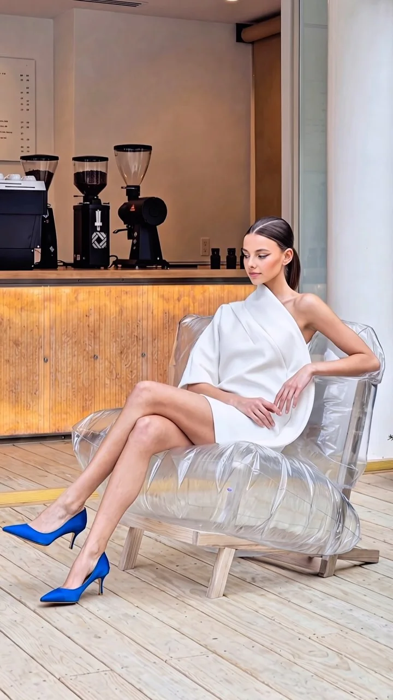
Annaсиние сатиновые лодочки
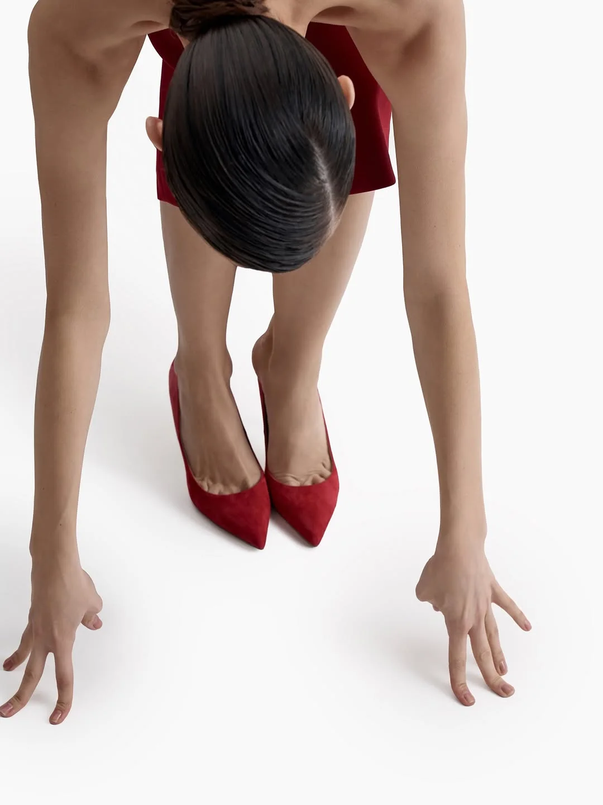
Mayaмодель в каталоге
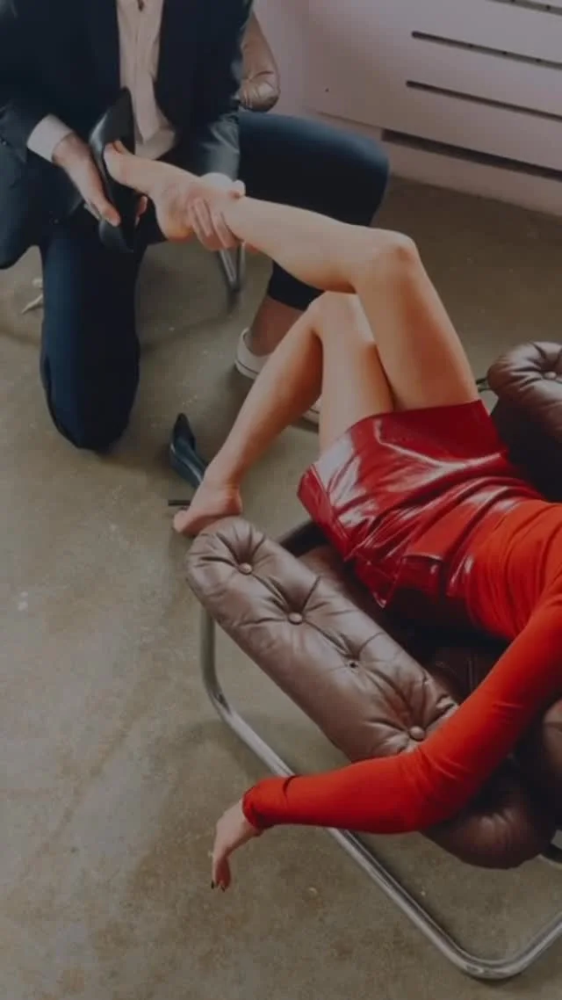
Matildaмодель в каталоге
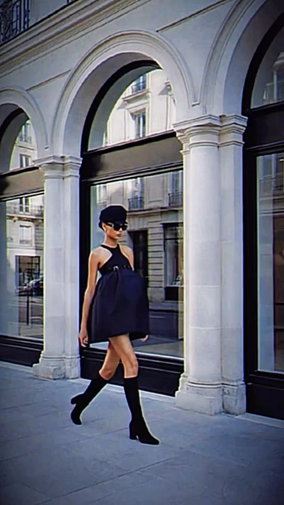
Aysedoraмодель в каталоге
Словарь па
Восемь движений, которые выдержит эта пара
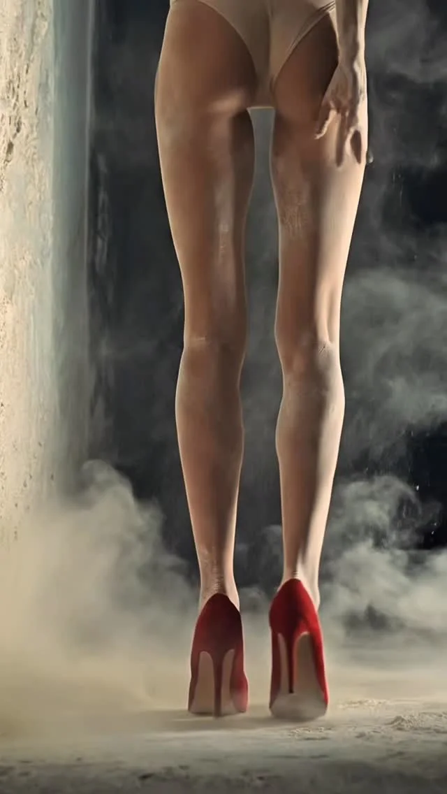
Первая позицияпятки вместе, носки врозь
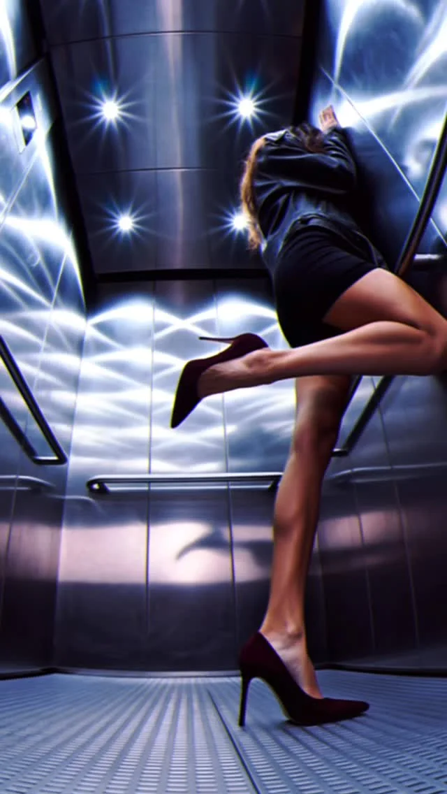
Пассев лифте бизнес-центра
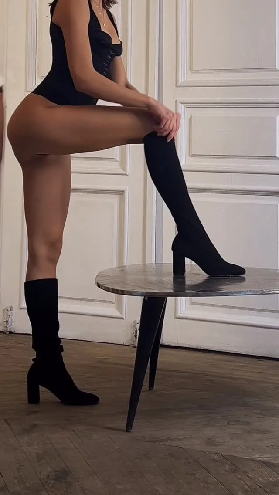
Аттитюдсапог на кофейном столике
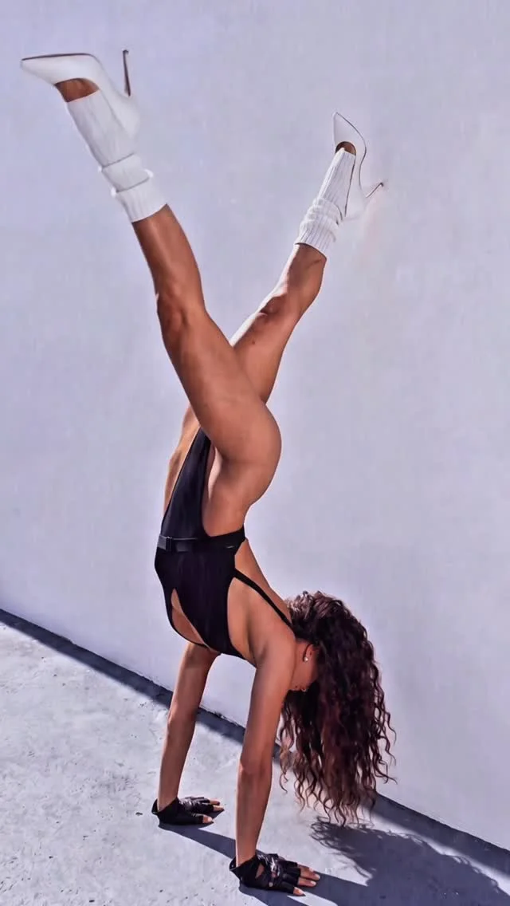
Ранверсемир вверх ногами
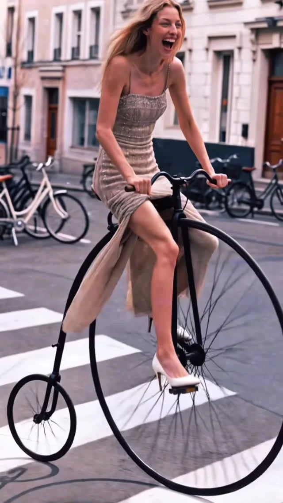
Па-де-дес велосипедом
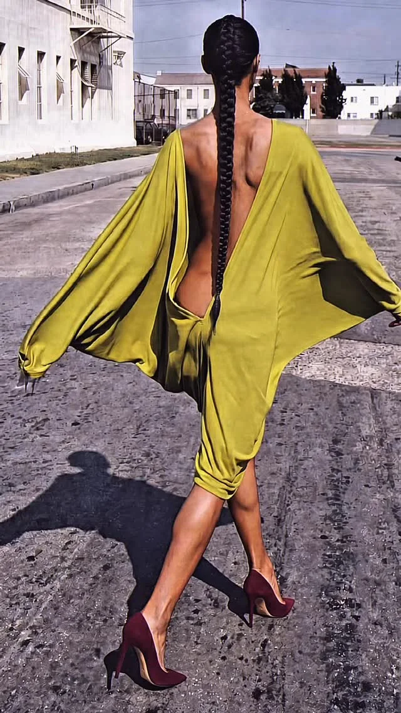
Променадоткрытая спина, открытый город
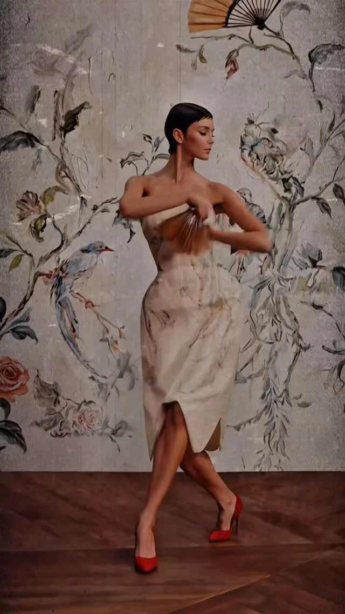
Эфасеполуоборот к публике
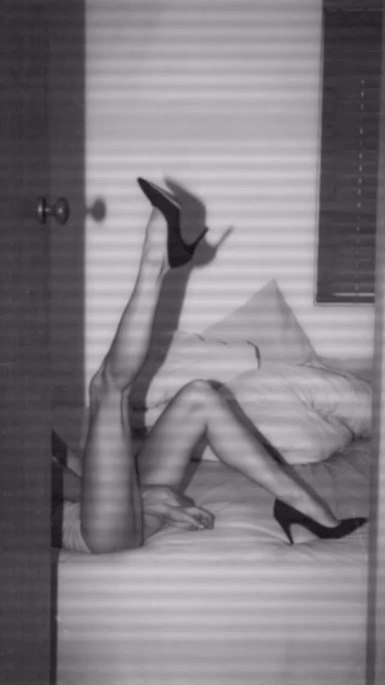
Поклонноги вверх после долгого дня
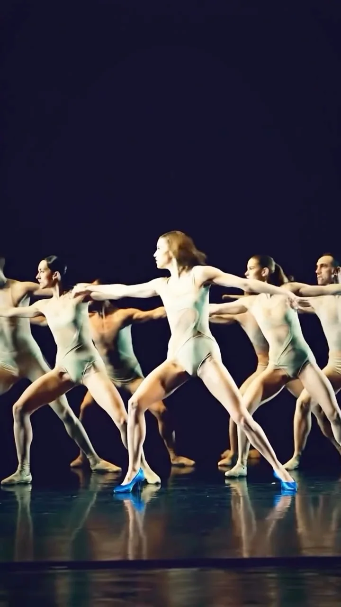
Овации
Лучший промышленный дизайн России
N.early N.aked — победитель национальной премии в промышленном дизайне. А ещё — коллаборация с Lamoda Premium: пары бренда стоят на одной полке с мировыми марками.
Национальная премия
N.early N.aked × Lamoda Premium
Inspired by dance, created for routine
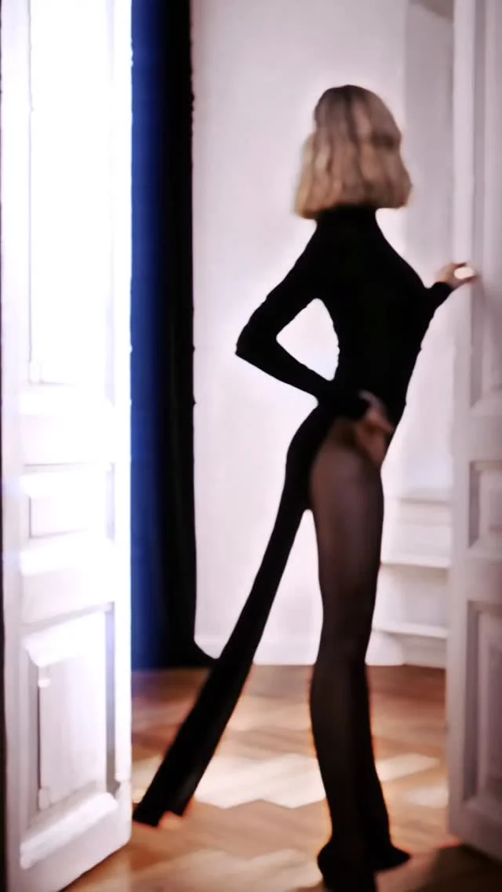
Билет · партер · место у зеркала
Ваша пара ждёт за кулисами
Каталог, размеры и доставка — на nn.shoes. Подобрать модель помогут в директе.